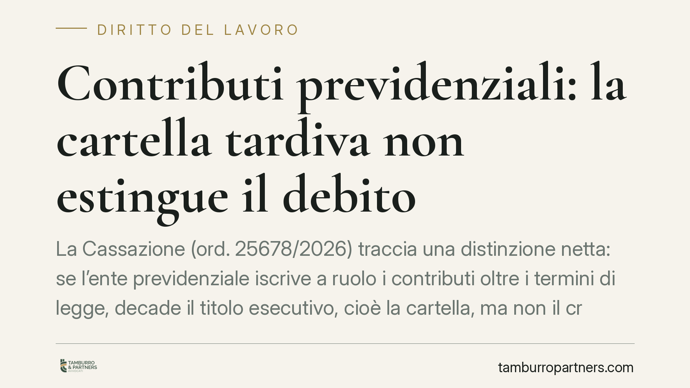

Contributi previdenziali: la cartella tardiva non estingue il debito
La Cassazione (ord. 25678/2026) traccia una distinzione netta: se l'ente previdenziale iscrive a ruolo i contributi oltre i termini di legge, decade il titolo esecutivo, cioè la cartella, ma non il credito sottostante, che resta dovuto e può essere azionato in giudizio. Un chiarimento che pesa su professionisti e iscritti alle Casse, spesso convinti che il ritardo cancelli l'obbligo.

Il caso
Un commercialista impugna la cartella con cui la Cassa previdenziale, tramite l'Agenzia delle Entrate-Riscossione, pretende contributi relativi ad annualità pregresse. La difesa punta sulla tardività dell'iscrizione a ruolo: i termini erano scaduti, dunque — questa la tesi — il debito andava considerato estinto.
La Corte respinge il ragionamento. Il ritardo travolge la cartella come strumento di riscossione coattiva, ma lascia intatto il diritto di credito. In altre parole: l'ente non può più usare quella cartella per pignorare, ma può ancora far valere la pretesa nelle forme ordinarie.
Inquadramento normativo
Il riferimento è l'art. 25 del D.lgs. 46/1999, che fissa i termini entro cui i contributi previdenziali possono essere iscritti a ruolo. Il superamento di quei termini configura una decadenza: l'ente perde la facoltà di procedere con quello specifico titolo esecutivo.
La Cassazione distingue due piani che spesso vengono confusi. Da un lato il titolo esecutivo (la cartella), cioè il documento che consente la riscossione forzata. Dall'altro il rapporto obbligatorio sottostante, cioè il credito contributivo in sé. La decadenza processuale colpisce il primo, non il secondo.
È un'applicazione della differenza classica tra decadenza e prescrizione. La decadenza fa cadere un potere entro un termine rigido; la prescrizione, invece, estingue il diritto per il decorso del tempo unito all'inerzia del titolare. Solo la prescrizione — soggetta a termini propri e a possibili interruzioni — può cancellare il debito contributivo. La cartella tardiva, da sola, no.
Il silenzio dell'ente non annulla nulla
L'ordinanza chiude anche un secondo fronte. Alcuni sostenevano che il silenzio dell'ente oltre 220 giorni dalla contestazione producesse un annullamento automatico della pretesa. La Corte lo esclude: nessuna norma ricollega a quel silenzio un effetto estintivo del credito. L'inerzia dell'amministrazione, di per sé, non equivale a rinuncia.
Chi confidava in una decadenza "per silenzio" resta quindi esposto. La pretesa sopravvive finché non interviene la prescrizione o un provvedimento espresso di sgravio.
Implicazioni pratiche
Per il professionista iscritto a una Cassa, il messaggio è duplice.
Primo: l'annullamento della cartella per vizi di tardività è una vittoria parziale. Elimina l'aggressione immediata del patrimonio, ma non chiude la partita sul merito del debito. L'ente può riformulare la pretesa con altri strumenti.
Secondo: la vera arma difensiva resta la prescrizione del credito contributivo, non la decadenza del ruolo. È su quel terreno che va costruita la strategia, verificando quando il termine è maturato e se vi siano stati atti interruttivi validi.
La distinzione non è un tecnicismo. Cambia l'obiettivo dell'impugnazione, i motivi da dedurre e la prospettiva sul rischio residuo. Impostare il ricorso solo sulla tardività della cartella, senza affrontare la sorte del credito, significa esporsi a nuove richieste.
Cosa fare in concreto
- Verificate la data di notifica della cartella e confrontatela con i termini di iscrizione a ruolo dell'art. 25 D.lgs. 46/1999: la tardività va eccepita, ma sapendo che vale solo sul titolo.
- Ricostruite il decorso della prescrizione del credito contributivo, individuando eventuali atti interruttivi (solleciti, avvisi, precedenti richieste): è qui che si gioca l'estinzione del debito.
- Non affidatevi al silenzio dell'ente: l'assenza di risposta oltre 220 giorni non produce annullamento e non va trattata come tale.
- Impostate l'impugnazione su più motivi, distinguendo il vizio del titolo dal merito della pretesa, per evitare che una vittoria formale lasci aperto il debito.
- Consigliamo di documentare per iscritto ogni interlocuzione con la Cassa e con l'Agente della Riscossione, così da fissare date e contenuti utili in un eventuale giudizio.
Disclaimer
Contributo informativo a cura di Tamburro & Partners - Avv. Giuseppe Tamburro. Non costituisce parere legale.
Ogni storia di lavoro ha i suoi tempi.
Se gestisci HR e vuoi un confronto su contenzioso, ispezioni o licenziamenti, scrivi allo studio. Ti rispondiamo entro un giorno lavorativo.